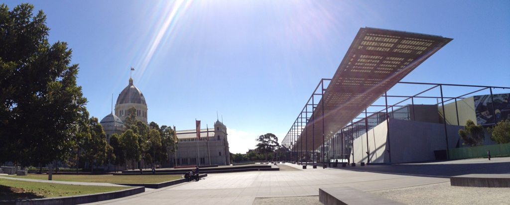

Tue, 27 Dec 2011 11:42:22 · melbourne · aussie · australia · museum · travel
melbourne museum at a glance

Melbourne Museum at a glance…
Tue, 27 Dec 2011 11:42:22 · melbourne · aussie · australia · museum · travel

Melbourne Museum at a glance…